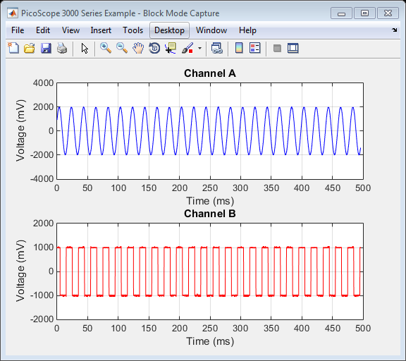

PS3000A_IC_GENERIC_DRIVER_BLOCK
This is an example of an instrument control session using a device object. The instrument control session comprises all the steps you are likely to take when communicating with your instrument. These steps are:
1. Create a device object 2. Connect to the instrument 3. Configure properties 4. Invoke functions 5. Disconnect from the instrument
To run the instrument control session, type the name of the file, PS3000A_IC_Generic_Driver_Block, at the MATLAB command prompt.
The file, PS3000A_IC_GENERIC_DRIVER_BLOCK.M must be on your MATLAB PATH. For additional information on setting your MATLAB PATH, type 'help addpath' at the MATLAB command prompt.
Example: PS3000A_IC_Generic_Driver_Block;
Description: Demonstrates how to call functions in order to capture a block of data from a PicoScope 3000 series oscilloscope using the underlying 'A' API.
See also ICDEVICE.
Copyright: Pico Technology Limited 2014 - 2015
Author: HSM
History:
15Apr15 HSM Modified script for publishing.
Contents
Suggested Input Test Signals
This example was published using the following test signals:
- Channels A: 4Vpp, 50Hz sine wave
- Channels B: 2Vpp, 50Hz square wave
Clear Command Window
clc;
Load Configuration Information
PS3000aConfig
Device Connection
% Create a device object. % The serial number can be specified as a second input parameter. ps3000aDeviceObj = icdevice('picotech_ps3000a_generic.mdd', ''); % Connect device object to hardware. connect(ps3000aDeviceObj)
Copyright (C) Pico Technology Ltd. 2014 - 2015
PicoScope 3000 Series MATLAB Instrument Driver
Number of units found: 1
Serial number(s): CU654/001
Opening PicoScope 3000 Series device...
Instrument Device Object Using Driver : picotech_ps3000a_generic.mdd
Instrument Information
Type: Oscilloscope
Manufacturer: Pico Technology Ltd.
Model: PicoScope 3000 Series (A API)
Driver Information
DriverType: MATLAB generic
DriverName: picotech_ps3000a_generic.mdd
DriverVersion: 1.2.14
Communication State
Status: open
Setting Device Parameters...
Default Analogue Channel Setup:-
--------------------------------
Channel A:-
Enabled: True
Coupling: DC
Range: 5V
Analogue Offset: 0.0V
Channel B:-
Enabled: True
Coupling: DC
Range: 5V
Analogue Offset: 0.0V
Turning off Equivalent Time Sampling...
Turning off trigger...
Default Block mode parameters:-
Timebase index : 64
Time Interval: 496.0 ns
Number of pre-trigger samples: 0
Number of post-trigger samples: 1000000
Total number of samples: 1000000
Default Streaming mode parameters:-
Streaming interval: 1.00e-06 s
Streaming auto stop: 1
Default Signal generator parameters:-
Start frequency: 1000 Hz
Stop frequency: 1000 Hz
Offset voltage: 0 mV
Peak to Peak voltage: 2000 mV
Initialisation complete.
Connected to PicoScope 3000 Series device:-
Instrument Model: 3204D
Batch/Serial Number: CU654/001
Analogue Channels: 2
Bandwidth: 70 MHz
Buffer memory: 128 MS
Maximum sampling rate: 1 GS/s
Signal Generator Type: Arbitrary Waveform Generator
Set Channels
% Default driver settings applied to channels are listed below - % use ps3000aSetChannel to turn channels on or off and set voltage ranges, % coupling, as well as analogue offset. % In this example, data is only collected on Channels A and B so default % settings are used and Channels C and D (oscilloscopes with 4 analogue % channels only) are switched off. % Channels : 2 - 3 (ps3000aEnuminfo.enPS3000AChannel.PS3000A_CHANNEL_C - PS3000A_CHANNEL_D) % Enabled : 0 % Type : 1 (ps3000aEnuminfo.enPS3000ACoupling.PS3000A_DC) % Range : 8 (ps3000aEnuminfo.enPS3000ARange.PS3000A_5V) % Analogue Offset: 0.0 if(ps3000aDeviceObj.channelCount == PicoConstants.QUAD_SCOPE) [status.setChC] = invoke(ps3000aDeviceObj, 'ps3000aSetChannel', 2, 0, 1, 8, 0.0); [status.setChD] = invoke(ps3000aDeviceObj, 'ps3000aSetChannel', 3, 0, 1, 8, 0.0); end
Set Simple Trigger
Set a trigger on Channel A with an auto timeout - the default value for delay is used.
% Trigger properties and functions are located in the Instrument % Driver's Trigger group. triggerObj = get(ps3000aDeviceObj, 'Trigger'); triggerObj = triggerObj(1); % Set the autoTriggerMs property in order to automatically trigger the % oscilloscope after 1 second if a trigger event has occurred. Set to 0 to % wait indefinitely for a trigger event. set(triggerObj, 'autoTriggerMs', 1000); % Channel : 0 (ps3000aEnuminfo.enPS3000AChannel.PS3000A_CHANNEL_A) % Threshold : 1000 (mV) % Direction : 2 (ps3000aEnuminfo.enPS3000AThresholdDirection.PS3000A_RISING) [status.setSimpleTrigger] = invoke(triggerObj, 'setSimpleTrigger', 0, 1000, 2);
Verify Timebase Index
Driver default timebase index used - use ps3000aGetTimebase2 to query the driver as to suitability of using a particular timebase index then set the 'timebase' property if required. Use a while loop to query the function until the status indicates that a valid timebase index has been selected. In this example, the timebase index of 64 is valid.
% timebase : 64 (default) % segment index: 0 [status.getTimebase2, timeIntervalNanoSeconds, maxSamples] = invoke(ps3000aDeviceObj, 'ps3000aGetTimebase2', 64, 0);
Set Block Parameters and Capture Data
Capture a block of data and retrieve data values for Channels A and B.
% Block data acquisition properties and functions are located in the % Instrument Driver's Block group. blockObj = get(ps3000aDeviceObj, 'Block'); blockObj = blockObj(1); % Set pre-trigger and post-trigger samples as required % The default of 0 pre-trigger and 1 million post-trigger samples is used % in this example. % set(ps3000aDeviceObj, 'numPreTriggerSamples', 0); % set(ps3000aDeviceObj, 'numPostTriggerSamples', 2e6); % Capture a block of data: % % segment index: 0 (The buffer memory is not segmented in this example) [status.runBlock] = invoke(blockObj, 'runBlock', 0); % Retrieve data values: % % start index : 0 % segment index : 0 % downsampling ratio: 1 % downsampling mode : 0 (ps3000aEnuminfo.enPS3000ARatioMode.PS3000A_RATIO_MODE_NONE) [numSamples, overflow, chA, chB, chC, chD] = invoke(blockObj, 'getBlockData', 0, 0, 1, 0); % Stop the device [status.stop] = invoke(ps3000aDeviceObj, 'ps3000aStop');
runBlock:- Collecting block of data: Timebase: 64 Pre-trigger samples: 0 Post-trigger samples: 1000000 runBlock: Waiting for device to become ready... runBlock: Device ready. getBlockData: Setting up data buffers... getBlockData: Retrieving data... getBlockData: Assigning Analogue data to array and converting to milliVolts. getBlockData: Data succesfully retrieved.
Plot data
Plot data values returned from the device.
figure1 = figure('Name','PicoScope 3000 Series Example - Block Mode Capture', ... 'NumberTitle','off'); axes1 = axes('Parent', figure1); % Calculate time (nanoseconds) and convert to milliseconds % Use timeIntervalNanoSeconds output from ps3000aGetTimebase2 or % calculate from Programmer's Guide. timeNs = double(timeIntervalNanoSeconds) * double([0:numSamples - 1]); timeMs = timeNs / 1e6; % Channel A axisHandleChA = subplot(2,1,1); plot(axisHandleChA, timeMs, chA, 'b'); title(axisHandleChA, 'Channel A', 'FontWeight', 'bold'); xlabel(axisHandleChA, 'Time (ms)'); ylabel(axisHandleChA, 'Voltage (mV)'); grid(axisHandleChA); % Channel B axisHandleChB = subplot(2,1,2); plot(axisHandleChB, timeMs, chB, 'r'); title(axisHandleChB, 'Channel B', 'FontWeight', 'bold'); xlabel(axisHandleChB, 'Time (ms)'); ylabel(axisHandleChB, 'Voltage (mV)'); grid(axisHandleChB);
Disconnect
disconnect(ps3000aDeviceObj);
Close unit status: 0 Device with serial number CU654/001 closed successfully. Libraries unloaded successfully.